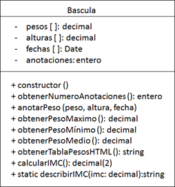
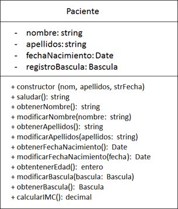

UD 1. Prueba de aplicaciones web y para dispositivos móviles
B.- Desarrollando el software
Se propone ilustrar el funcionamiento de las herramientas de automatizadas de testeo Mocha-Chai para JavaScript, mediante el desarrollo de dos clases: Paciente (paciente.js) y Bascula (bascula.js) y sus correspondientes casos de prueba unitarias para su testeo: paciente.spec.js y bascula.spec.js.
Clases de AppSalud
Clase Báscula
Esta clase permite registrar los distintos pesos (en kilogramos), y alturas (en metros), fechas en las que fueron tomadas, además permite llevar una contabilidad del número de pesadas (anotaciones) realizadas. Para ello la clase dispone de la siguiente estructura interna y métodos:
-
- constructor(): constructor sin parámetros que devuelve un nuevo objeto Báscula.
- obtenerNumeroAnotaciones(): Devuelve el número de pesajes que ha registrado la báscula.
- anotarPeso(): Permite anotar un nuevo peso, es obligatorio proporcionar un peso (en kg.) También, es posible indicar una altura (en caso de omitir este valor se tomará el valor uno, por defecto), así como la fecha de la pesada, (en caso de no indicar fecha, adoptará la del día actual).
- obtenerPesoMaximo(): Devuelve el mayor de los pesos que tiene registrados la Báscula.
- obtenerPesoMinimo(): Devuelve el menor de los pesos que tiene registrados la Báscula.
- calcularIMC(): Calcula el Índice de Masa Corporal (IMC) tomando como referencia el peso y altura de la última anotación. Sabiendo que:
IMC =peso / altura2
-
- describirIMC(imc): Método textual que recibe un valor de índice de masa corporal (imc) y devuelve su descripción textual equivalente:
- imc inferior a 16: Infrapeso (delgadez severa).
- imc entre 16–17: Infrapeso (delgadez moderada).
- imc entre 17-18.5: Infrapeso (delgadez aceptable).
- imc entre 18.5-25: Peso normal.
- imc entre 25-30: Sobrepeso.
- imc entre 30-35: Obeso (Tipo I).
- imc entre 35-40: Obeso (Tipo II).
- imc superior a 40: Obeso (Tipo III).
- describirIMC(imc): Método textual que recibe un valor de índice de masa corporal (imc) y devuelve su descripción textual equivalente:

Clase Paciente
La clase Paciente permite registrar los datos básicos de un paciente: su nombre, apellidos y fecha de nacimiento; y además permite registrar los distintos pesajes y tallas del paciente haciendo uso de la clase Báscula.
-
- constructor(): construye un nuevo objeto Paciente a partir de su nombre, apellidos y fecha de nacimiento.
- saludar(): Devuelve una cadena personalizada con el nombre y apellidos del paciente: “Hola soy ...” .
- obtenerNombre(): Devuelve el nombre del paciente.
- modificarNombre(nombre): Permite modificar el nombre del paciente.
- obtenerApellidos(): Devuelve los apellidos del paciente.
- modificarApellidos(apellidos): Permite modificar los apellidos de los pacientes.
- obtenerFechaNacimiento(): Devuelve la fecha de nacimiento del paciente.
- modificarFechaNacimento(fecha): Permite modificar la fecha de nacimiento del paciente.
- obtenerEdad(): Calcula la edad del paciente, tomando como referencia su fecha de nacimiento y la fecha actual.
- modificarBascula(bascula): Permite modificar la báscula asociada al paciente.
- obtenerBascula(): Devuelve la báscula asociada al paciente.
- calcularIMC(): Devuelve el Índice de Masa Corporal del paciente, para ello este método envía un mensaje al método ofrecido por la báscula que será el que realice el cálculo.
